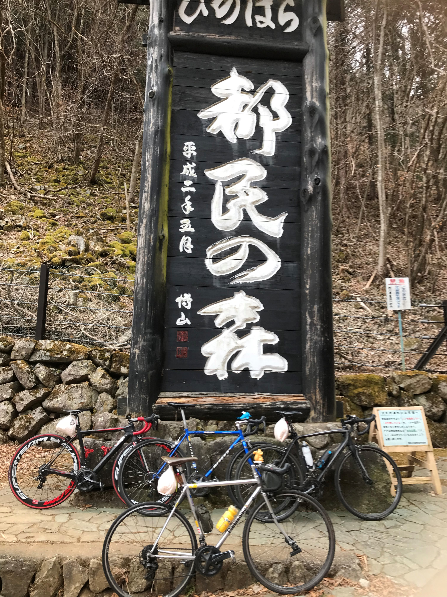
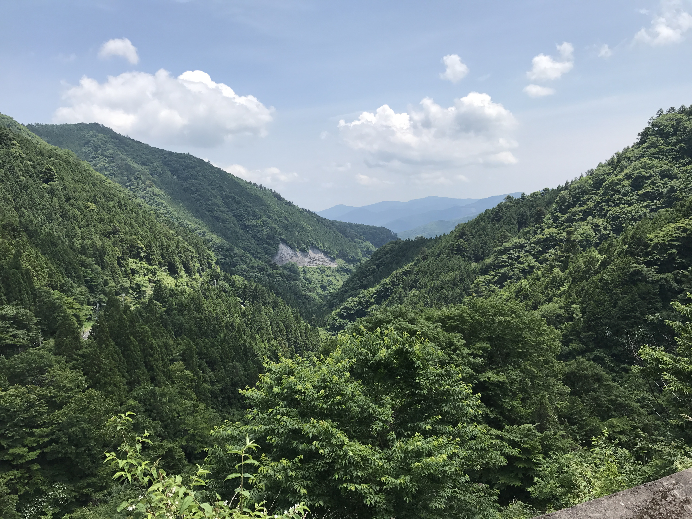
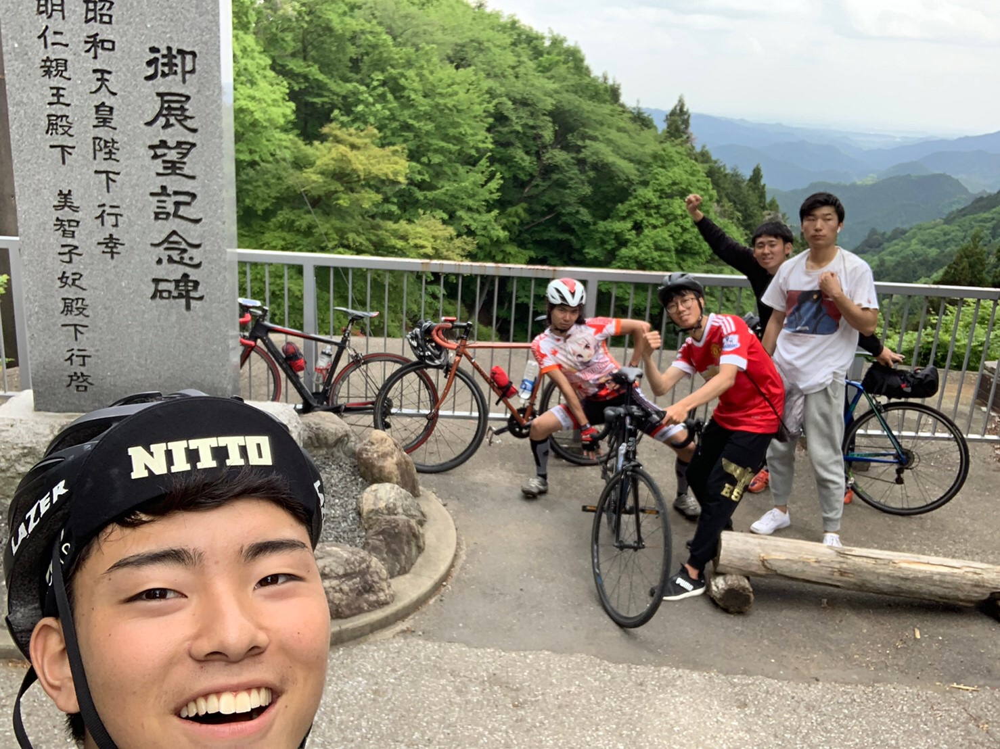
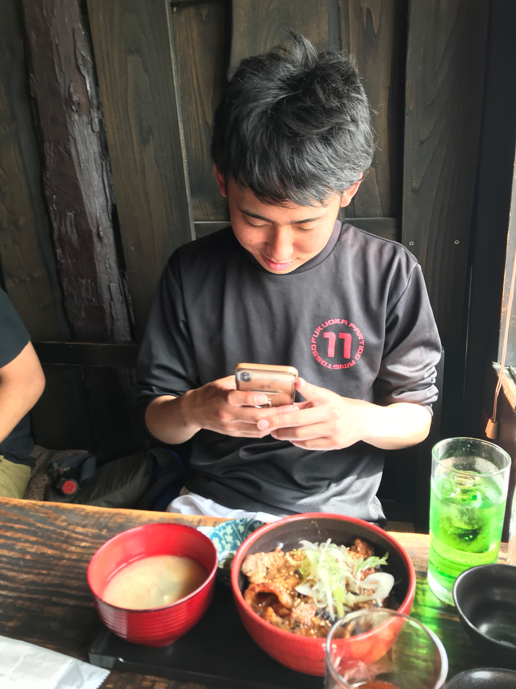

創価大学サイクリング部 合宿の軌跡
創価大学 サイクリング部の合宿の軌跡を残していくよ。八王子周辺のサイクリングコース
東京&神奈川 : 和田峠(陣馬山)
八王子市と神奈川県相模原市の間に存在する峠道。多くのサイクリストが訪れる聖地！


都内屈指の激坂として有名で、数多くの初心たちの心を折ってきたとか...
創価大学から、往復 40km くらいであり、気軽に行けるのに『行きたくない』と思わせる魔境である。
緑がとても豊かで、自然を感じたい時や軽い登山をしたい時に訪れるぞ！
東京 : 都民の森
奥多摩といえば、言わずと知れた都内最大の緑地。往復100km程になるが、最高の体験が待っている...!
 こちらもサイクリストの聖地となっており、週末はサイクリストであふれかえっているぞ！
東京ヒルクライム というレースのコースにも選ばれており、初心者から上級者まで楽しめるぞ！
埼玉県 : 秩父
埼玉県の西部には豊かな緑とサイクリングコースが用意されているぞ！
『あの日見た花の名前を僕達はまだ知らない。』で有名な秩父市だが、聖地巡礼だけでなく、天覧山のハイキングや『ちんばた』の豚みそ丼など見どころが満載！

思ったより山奥なので、自転車で行くのは大変...

頂上で食べる『豚みそ丼』は格別！

アニメの聖地なので、各地で写真撮影している人々に出会えるぞ！
他の都市に比べて、距離も長ければ坂も登らされるので、実は難易度の高いコース。慣れてきたら行ってみよう！